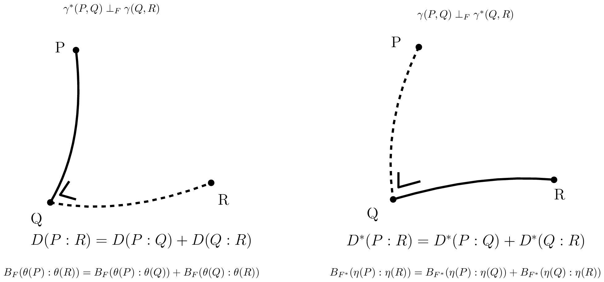

03a information manifolds structures
3 信息流形¶
3.1 概述¶
在本部分中，我们解释信息几何中流形的对偶结构。在 §3.2 中，我们首先介绍核心的共轭联络流形（CCMs）\((M,g,\nabla,\nabla^*)\)，并展示如何构建统计流形
(SMs) \((M, g, C)\) 来自 §3.3 中的 CCM。从任意统计流形出发，我们可以构造 CCM 的一个单参数族 \((M, g, \nabla^{-\alpha}, \nabla^{\alpha})\)，即信息 \(\alpha\)-流形。我们在 §3.5 中陈述信息几何的基本定理。这些 CCM 与 SM 的结构先验上并不与任何距离相关，但首先需要一个与度量张量 \(g\) 耦合的共轭联络对 \((\nabla, \nabla^*)\)。我们展示两种构造初始共轭联络对的方法。第一种方法是在 §3.6 中从任意散度 \(D\) 构造一对共轭联络 \(({}^D\nabla, {}^D\nabla^*)\)。因此，当散度对称时，即 \(D(\theta_1 : \theta_2) = D(\theta_2 : \theta_1)\)，我们得到自共轭联络。当散度为 Bregman 散度（即对于严格凸且可微的 Bregman 生成元，\(D = B_F\)）时，我们在 §3.7 中得到对偶平坦流形（DFMs）\((M, \nabla^2 F, {}^F\nabla, {}^F\nabla^*)\)。DFM 很好地推广了欧几里得几何，并展现出勾股定理。我们进一步刻画点关于子流形 a 的正交 \({}^F\nabla\)-投影与对偶 \({}^F\nabla^*\)-投影何时唯一。[^7] 第二种获得共轭联络对 \(({}^e\nabla, {}^m\nabla)\) 的方法是从一个正则参数概率分布族 \(\mathcal{P} = \{p_\theta(x)\}_\theta\) 来定义这些联络。在这种情况下，这些‘e’指数联络 \({}^e\nabla\) 和‘m’混合联络 \({}^m\nabla\) 与 Fisher 信息度量 \({}_{\mathcal{P}}g\) 相耦合。通过考虑偏度 Amari-Chentsov 三次张量 \({}_{\mathcal{P}}C\)，可以恢复统计流形 \((\mathcal{P}, {}_{\mathcal{P}}g, {}_{\mathcal{P}}C)\)，并由此得到一族 CCM 的单参数族 \((\mathcal{P}, {}_{\mathcal{P}}g, {}_{\mathcal{P}}\nabla^{-\alpha}, {}_{\mathcal{P}}\nabla^{+\alpha})\)，即统计期望 \(\alpha\)-流形。在这种参数统计语境下，这些信息流形被称为期望信息流形，因为各种量都是用统计期望 \(E_\cdot[\cdot]\) 来表达的。注意到这些信息流形可以一般地用于信息科学，而不仅限于传统的统计学领域。在统计学中，我们在 §3.10 中通过研究统计不变性准则来为联络、度量张量和散度的选择提供动机。我们解释如何从标准的 \(f\)-散度中恢复期望 \(\alpha\)-联络，而 \(f\)-散度是唯一满足信息单调性性质的可分散度。最后，在 §3.11 中，我们回顾 Fisher-Rao 期望黎曼流形，它们是装备了称为 Fisher-Rao 距离（简称 Rao 距离）的测地度量距离的黎曼流形 \((\mathcal{P}, {}_{\mathcal{P}}g)\)。
3.2 共轭联络流形：\((M, g, \nabla, \nabla^*)\)¶
我们从一个定义开始：
定义 1（共轭联络）。称联络 \(\nabla^*\) 关于度量张量 \(g\) 与联络 \(\nabla\) 共轭，当且仅当对于任意光滑向量场三元组 \((X, Y, Z)\) 满足如下恒等式：
我们在记号上可将式 35 重写为：
并进一步显式写出，对于每一点 \(p \in M\)，我们有：
我们检查右端是一个标量，而左端是一个实值函数的方向导数，它也是一个标量。
共轭是一个对合：\((\nabla^*)^* = \nabla\)。
定义 2（共轭联络流形）。共轭联络流形（CCM）的结构记为 \((M, g, \nabla, \nabla^*)\)，其中 \((\nabla, \nabla^*)\) 是关于度量 \(g\) 的共轭联络。
一个显著的性质是，向量的对偶平行移动保持度量。也就是说，对于任意光滑曲线 \(c(t)\)，当我们用原始平行移动 \(\prod_c^\nabla\) 移动其中一个向量 \(u\)，并用对偶平行移动 \(\prod_c^{\nabla^*}\) 移动另一向量 \(v\) 时，内积保持不变。
[^7]: 在欧几里得几何中，利用勾股定理可以证明点 \(p\) 到仿射子空间 \(S\) 的正交投影是唯一的。
11
性质 1（对偶平行输运保持度量）。一对共轭联络 \((\nabla, \nabla^*)\) 保持度量 \(g\) 当且仅当：
性质 2。 给定 \((M, g)\) 上的一个联络 \(\nabla\)（即结构 \((M, g, \nabla)\)），存在唯一的共轭联络 \(\nabla^*\)（即对偶结构 \((M, g, \nabla^*)\)）。
我们考虑一个配备了共轭联络对 \(\nabla\) 与 \(\nabla^*\) 的流形 \(M\)，它们与度量张量 \(g\) 耦合，使得对偶平行输运保持度量。我们定义平均联络 \(\bar{\nabla}\)：
相应的 Christoffel 系数记为 \(\bar{\Gamma}\)。该平均联络与 Levi-Civita 度量联络一致：
性质 3。 平均联络 \(\bar{\nabla}\) 是自共轭的，并且与 Levi-Civita 度量联络重合。
3.3 统计流形：\((M, g, C)\)¶
Lauritzen 于 1987 年引入了信息几何中的这一角结构 [62]。需注意，尽管它名为“统计流形”，但它是一种纯几何构造，可在统计学领域之外使用。然而，正如我们稍后将要提到的，我们总可以找到一个与统计流形 [128] 对应的统计模型 \(\mathcal{P}\)。我们将看到如何把共轭联络流形转化为这样的统计流形，以及如何随后从统计流形导出无限一族 CCMs。换言之，一旦我们拥有一对共轭联络，我们就能够构造一族共轭联络对。
我们定义一个完全对称⁸的三次 \((0,3)\)-张量（即 3-协变张量），称为 Amari-Chentsov 张量：
或用无坐标方程表示：
使用局部基，该三次张量可表示为：
定义 3（统计流形 [62]）。统计流形 \((M, g, C)\) 是一个配备了度量张量 \(g\) 和完全对称三次张量 \(C\) 的流形 \(M\)。
⁸这意味着对于任意置换 \(\sigma\)，都有 \(C_{ijk} = C_{\sigma(i)\sigma(j)\sigma(k)}\)。度量张量是完全对称的。
12
3.4 共轭联络流形族 \(\{(M,g,\nabla^{-\alpha},\nabla^\alpha = (\nabla^{-\alpha})^*)\}_{\alpha\in\mathbb{R}}\)¶
对于任意一对共轭联络 \((\nabla,\nabla^*)\)，我们可以定义一个 \(1\)-参数联络族 \(\{\nabla^\alpha\}_{\alpha\in\mathbb{R}}\)，称为 \(\alpha\)-联络，使得 \((\nabla^{-\alpha}, \nabla^\alpha)\) 关于度量对偶耦合，且 \(\nabla^0=\bar{\nabla}={}^{\text{LC}}\nabla\)，\(\nabla^1=\nabla\) 以及 \(\nabla^{-1}=\nabla^*\)。注意到缩放的三次张量 \(\alpha C\) 也是一个完全对称的三次 \(3\) 阶协变张量，我们可以从统计流形 \((M,g,C)\) 导出 \(\alpha\)-联络如下：
其中 \(\Gamma^0_{ij,k}\) 是 Levi-Civita Christoffel 符号，且 \(\Gamma_{ki,j}\stackrel{\Sigma}{=}\Gamma^l_{ij}g_{lk}\)（通过指标变换）。
\(\alpha\)-联络 \(\nabla^\alpha\) 也可以如下定义：
定理 2（信息 \(\alpha\)-流形族）。对于任意 \(\alpha\in\mathbb{R}\)，\((M,g,\nabla^{-\alpha},\nabla^\alpha = (\nabla^{-\alpha})^*)\) 是一个共轭联络流形。
\(\alpha\)-联络 \(\nabla^\alpha\) 也可以通过取如下加权组合直接从一对共轭联络 \((\nabla,\nabla^*)\) 构造：
3.5 信息几何基本定理：\(\nabla\) \(\kappa\)-弯曲 \(\Leftrightarrow\) \(\nabla^*\) \(\kappa\)-弯曲¶
我们现在陈述信息几何基本定理及其推论：
定理 3（对偶常曲率流形）。若无挠仿射联络 \(\nabla\) 具有常曲率 \(\kappa\)，则其共轭无挠联络 \(\nabla^*\) 必然具有相同的常曲率 \(\kappa\)。
证明见 [25]（命题 8.1.4，第 226 页）。
若统计流形 \((M,g,C)\) 的诱导 \(\alpha\)-联络是平坦的，则称其为 \(\alpha\)-平坦的。可以证明 \(R^\alpha = -R^{-\alpha}\)。
我们得到以下两个推论：
推论 1（对偶 \(\alpha\)-平坦流形）。流形 \((M,g,\nabla^{-\alpha},\nabla^\alpha)\) 是 \(\nabla^\alpha\)-平坦的当且仅当它是 \(\nabla^{-\alpha}\)-平坦的。
推论 2（对偶平坦流形（\(\alpha=\pm 1\)））。流形 \((M,g,\nabla,\nabla^*)\) 是 \(\nabla\)-平坦的当且仅当它是 \(\nabla^*\)-平坦的。
（见 [9] 的定理 3.3）
现在我们定义统计结构 [46] 的常曲率概念：
定义 4（常曲率 \(\kappa\)）。统计结构 \((M,g,\nabla)\) 被称为具有常曲率 \(\kappa\)，当
其中 \(\Gamma(TM)\) 表示光滑向量场的空间。
可以证明共轭 \(\alpha\)-联络 [25] 的 Riemann-Christoffel（RC）\(4\)-张量有如下关系：
因此我们有 \(g\left(R^{\nabla^*}(X,Y)Z,W\right) = -g\left(Z,R^\nabla(X,Y)W\right)\)。
因此，一旦给定一对共轭联络，我们总能构造一个 \(1\)-参数流形族。从计算的角度来看，具有常曲率 \(\kappa\) 的流形是很有意义的，因为对偶测地线具有简单的闭式表达式。
3.6 由散度导出的共轭联络：\((M, D) \equiv (M, {}^Dg, {}^D\nabla, {}^D\nabla^* = {}^{D^*}\nabla)\)¶
粗略地说，散度 \(D(\cdot:\cdot)\) 是一种光滑距离 [138]，可能是非对称的。为了严格定义散度，我们首先引入以下便捷记号：\(\partial_{i,\cdot} f(x,y) = \frac{\partial}{\partial x^i} f(x,y)\)，\(\partial_{\cdot,j} f(x,y) = \frac{\partial}{\partial y^j} f(x,y)\)，\(\partial_{ij,\cdot} f(x,y) = \frac{\partial^2}{\partial x^i \partial x^j} f(x,y)\) 以及 \(\partial_{i,jk} f(x,y) = \frac{\partial}{\partial x^i}\frac{\partial^2}{\partial y^j \partial y^k} f(x,y)\)，等等。
定义 5（散度）。流形 \(M\) 上关于局部坐标卡 \(\Theta \subset \mathbb{R}^D\) 的散度 \(D: M \times M \to [0,\infty)\) 是一个满足以下性质的 \(C^3\) 函数：
- 对所有 \(\theta, \theta' \in \Theta\) 有 \(D(\theta:\theta') \geq 0\)，且等号成立当且仅当 \(\theta=\theta'\)（不可分辨者同一律），
- 对所有 \(i,j \in [D]\) 有 \(\partial_{i,\cdot} D(\theta:\theta')|_{\theta=\theta'} = \partial_{\cdot,j} D(\theta:\theta')|_{\theta=\theta'} = 0\)，
- \(-\partial_{\cdot,i}\partial_{\cdot,j} D(\theta:\theta')|_{\theta=\theta'}\) 是正定的。
对偶散度通过交换自变量定义：
它也被称为反向散度（信息几何中的参考对偶性）。散度的参考对偶性是一个对合：\((D^*)^* = D\)。
欧几里得距离是一种度量距离，但不是散度。平方欧几里得距离是一种非度量对称散度。度量张量 \(g\) 给出黎曼度量距离 \(D_\rho\)，但它绝不是散度。
从任意给定的散度 \(D\) 出发，我们可以按照 Eguchi [42, 43]（1983）的构造定义一个共轭联络流形：
定理 4（由散度构造流形）。\((M, {}^Dg, {}^D\nabla, {}^{D^*}\nabla)\) 是一个信息流形，其中：
相关联的统计流形为 \((M, {}^Dg, {}^DC)\)，其中：
由于对任意 \(\alpha \in \mathbb{R}\)，\(\alpha{}^DC\) 都是一个完全对称的三次张量，我们可以导出一族单参数共轭联络流形：
在后续内容中，我们使用简写 \((M,D)\) 来表示由散度诱导的信息流形 \((M, {}^Dg, {}^D\nabla, {}^D\nabla^*)\)。注意，由构造可知：
3.7 对偶平坦流形（Bregman 几何）：\((M, F) \equiv (M, {}^{B_F}g, {}^{B_F}\nabla, {}^{B_F}\nabla^* = {}^{B_F^*}\nabla)\)¶
我们考虑满足非对称毕达哥拉斯定理的对偶平坦流形。这些平坦流形可以从一个典范的 Bregman 散度得到。
考虑一个严格凸光滑函数 \(F(\theta)\)，称为势函数，其中 \(\theta \in \Theta\)，而 \(\Theta\) 是一个开凸区域。注意，函数的凸性在仿射变换下不变。我们将一个相应的Bregman 散度（参数散度）与势函数 \(F\) 相关联：
我们也将点 \(P\) 与点 \(Q\) 之间的Bregman散度记为 \(D(P:Q) := B_F(\theta(P):\theta(Q))\)，其中 \(\theta(P)\) 表示点 \(P\) 的坐标。
由Bregman生成元\(^9\)诱导的信息几何结构为 \((M, {}^F g, {}^F C) := (M, {}^{B_F} g, {}^{B_F} C)\)，其定义为：
由于Christoffel符号的所有系数均为零（公式59），该信息流形是 \({}^F\nabla\)-平坦的。Levi-Civita联络 \({}^{\mathrm{LC}}\nabla\) 由度量张量 \({}^F g\)（通常不是平坦的）导出，而由 \((M, {}^F g, {}^F C)\) 可得共轭联络 \(({}^F\nabla)^* = {}^F\nabla^1\)。
Legendre-Fenchel变换产生凸共轭 \(F^*\)，它被解释为对偶势函数：
定理5（Fenchel-Moreau双共轭 [52]）。若 \(F\) 为下半连续\(^{10}\)的凸函数，则其Legendre-Fenchel变换是对合的：\((F^*)^* = F\)（双共轭）。
在对偶平坦流形中，存在两个全局对偶仿射坐标系 \(\eta = \nabla F(\theta)\) 与 \(\theta = \nabla F^*(\eta)\)，因此该流形可被单个坐标图覆盖。于是，若一个概率族属于指数族，则其自然参数不可能属于，例如，球面空间（那至少需要两个坐标图）。
我们有Crouzeix [32] 恒等式，它关联势函数的Hessian矩阵：
其中 \(I\) 表示 \(D\times D\) 单位矩阵。此Crouzeix恒等式表明 \(B = \{\partial_i\}_i\) 与 \(B^* = \{\partial^j\}_j\) 分别为原始基与倒基。
Bregman散度可借助Young-Fenchel（不）等式重新解释为典范散度 \(A_{F,F^*}\) [12]：
对偶Bregman散度 \(B_{F^*}(\theta:\theta') := B_F(\theta':\theta) = B_{F^*}(\eta:\eta')\) 给出
因此，该信息流形既是 \({}^F\nabla\)-平坦的，又是 \({}^F\nabla^*\)-平坦的：这种结构称为对偶平坦流形（DFM）。在DFM中，我们有两个全局仿射坐标系 \(\theta(\cdot)\) 与 \(\eta(\cdot)\)，它们由一对势函数 \(F\) 与 \(F^*\) 的Legendre-Fenchel变换所关联。亦即 \((M, F) \equiv (M, F^*)\)，并且对偶图册为 \(\mathcal{A}=\{(M,\theta)\}\) 与 \(\mathcal{A}^*=\{(M,\eta)\}\)。
在对偶平坦流形中，任意两点 \(P\) 与 \(Q\) 既可通过 \(\nabla\)-测地线（即 \(\theta\)-直线）相连，也可通过 \(\nabla^*\)-测地线（即 \(\eta\)-直线）相连。一般而言，在对偶平坦流形中存在 \(2^3 = 8\) 种类型的测地三角形。
\(^9\)此处，我们将Bregman生成元定义为正常的、下半连续的、严格凸的且 \(C^3\) 可微的实值函数。
\(^{10}\)函数 \(f\) 在 \(x_0\) 处下半连续（lsc）当且仅当 \(f(x_0) \leq \lim_{x\to x_0}\inf f(x)\)。若函数 \(f\) 在其定义域中所有 \(x\) 处都下半连续，则称 \(f\) 是下半连续的。
15

图 6：对偶平坦空间中的对偶毕达哥拉斯定理。
在 Bregman 流形上，向量的原始平行移动不改变其逆变分量，而对偶平行移动不改变其协变分量。由于对偶联络是平坦的，因此对偶平行移动与路径无关。
此外，图 6 所示的对偶毕达哥拉斯定理 [76] 成立。令 \(\gamma(P,Q) = \gamma_\nabla(P,Q)\) 表示通过点 \(P\) 和 \(Q\) 的 \(\nabla\)-测地线，\(\gamma^*(P,Q) = \gamma_{\nabla^*}(P,Q)\) 表示通过点 \(P\) 和 \(Q\) 的 \(\nabla^*\)-测地线。当 \(g(\dot{\gamma}_1(t_1), \dot{\gamma}_2(t_2)) = 0\) 时，曲线 \(\gamma_1\) 和 \(\gamma_2\) 在点 \(p = \gamma_1(t_1) = \gamma_2(t_2)\) 处关于度量张量 \(g\) 正交。
定理 6（对偶毕达哥拉斯恒等式）。
我们可以定义对偶 Bregman 投影并刻画这些投影在何时唯一：子流形 \(S \subset M\) 被称为 \(\nabla\)-平坦（\(\nabla^*\)-平坦）当且仅当它对应于 \(\theta\)-坐标系（分别地，\(\eta\)-坐标系）中的仿射子空间。
定理 7（投影的唯一性）。若 \(S\) 是 \(\nabla^*\)-平坦的，且最小化散度 \(D(\theta(P):\theta(Q))\)，则 \(P\) 在 \(S\) 上的 \(\nabla\)-投影 \(P_S\) 唯一：
若 \(M \subseteq S\) 是 \(\nabla\)-平坦的且最小化散度 \(D(\theta(Q):\theta(P))\)，则对偶 \(\nabla^*\)-投影 \(P_S^*\) 唯一：
设 \(S \subset M\) 且 \(S' \subset M\)，则我们定义 \(S\) 与 \(S'\) 之间的散度为
当 \(S\) 为 \(\nabla\)-平坦子流形且 \(S'\) 为 \(\nabla^*\)-平坦子流形时，子流形 \(S\) 与子流形 \(S'\) 之间的散度 \(D(S:S')\) 可用交替投影法 [8] 计算。让我们指出
16
Kurose [61] 报告了一个关于对偶常曲率流形的毕达哥拉斯定理，该定理推广了对偶平坦空间的毕达哥拉斯定理。
我们将简要解释在 [20] 中详细阐述的 Bregman 球空间。令 \(D\) 表示 \(\Theta\) 的维度。我们利用一个额外的维度 \(\theta_{D+1}\)，将原始坐标 \(\theta\) 提升到原始势函数 \(\mathcal{F}=\{\hat{\theta}=(\theta,\theta_{D+1}=F(\theta))\ :\ \theta\in\Theta\}\)。一个 Bregman 球 \(\Sigma\)
随后可以被提升到 \(\mathcal{F}\)：\(\hat{\Sigma}=\{\hat{\theta}(P)\ :\ P\in\sigma\}\)。边界 Bregman 球 \(\sigma=\partial\Sigma\) 被提升为 \(\partial\hat{\Sigma}=\hat{\sigma}\)，且所有被提升的点都由一个支撑 \((D+1)\) 维超平面（维度为 \(D\)）所支撑：
令 \(H_{\hat{\sigma}}^-\) 表示由 \(H_{\hat{\sigma}}\) 界定且包含 \(\hat{\theta}(C)=(\theta(C),F(\theta(C)))\) 的半空间。当且仅当 \(\theta(P)\in H_{\hat{\sigma}}^-\) 时，点 \(P\) 属于 Bregman 球 \(\Sigma\)，参见 [20]。反之，一个切割势函数 \(\mathcal{F}\) 的 \((D+1)\) 维超平面 \(H:\theta_{D+1}=\langle\theta,\eta_a\rangle+b\) 产生一个中心为 \(C\) 的 Bregman 球 \(\sigma_H\)，其中 \(\theta(C)=\nabla F^*(\eta_a)\)，半径为 \(r=\langle\nabla F^*(\eta_a),\eta_a\rangle-F(\theta_a)+b=F^*(\eta_a)+b\)，这里 \(\theta_a=\nabla F^*(\eta_a)\)。由此可知，\(k\) 个 Bregman 球的交集是一个 \((D-k)\) 维的 Bregman 球，并且一个 Bregman 球可以由一般位置下的 \(D+1\) 个点来定义，因为增广空间中的一个超平面由 \(D+1\) 个点定义。我们可以通过检查一个 \((D+2)\times(D+2)\) 行列式的符号，来判断点 \(P\) 是否属于一个其边界 Bregman 球穿过 \(D+1\) 个点 \(P_1,\ldots,P_{D+1}\) 的 Bregman 球：
我们有：
类似地，对偶型 Bregman 球 \(\Sigma^*\) 可以定义为
并被提升到对偶势函数 \(\mathcal{F}^*\)。注意 \(\mathrm{Ball}^*_F(C:r)=\mathrm{Ball}_{F^*}(C:r)\)。
一般而言，我们有如下关于 Bregman 散度的四边形关系：
性质 4（Bregman 四参数性质 [37]）。对于任意四个点 \(P_1\)、\(P_2\)、\(Q_1\)、\(Q_2\)，我们有如下恒等式：
总而言之，要定义一个对偶平坦空间，我们需要一个凸的 Bregman 生成元。当 \(\alpha\)-几何不是对偶平坦时（例如，Cauchy 流形 [79]），我们仍然可以通过考虑某些 Bregman 生成元（例如，用于对偶平坦 Cauchy 流形的 Bregman-Tsallis 生成元 [79]）在流形上建立对偶平坦结构。对偶平坦几何可以在更广泛的 Hessian 流形 [120] 框架下研究，后者考虑局部势函数。一般而言，对偶平坦空间可以由任意光滑严格凸生成元 \(F\) 构造。例如，可以在齐次锥上利用该锥的特征函数 \(F\) 建立对偶平坦几何 [120]。图 7 展示了对偶平坦空间的几种常见构造。
17